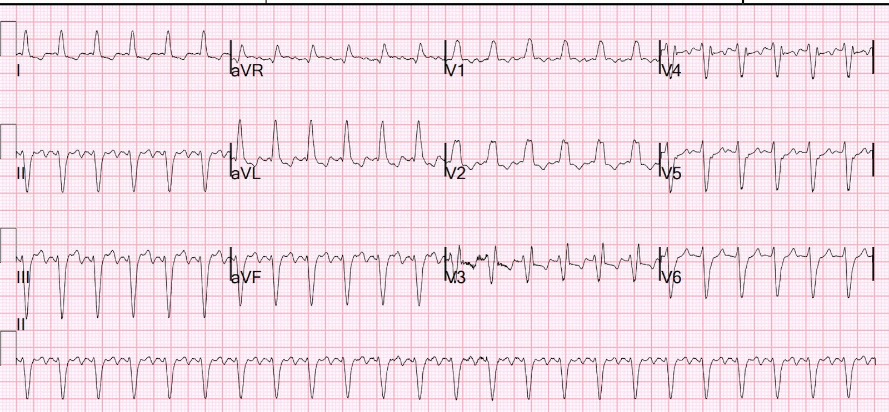
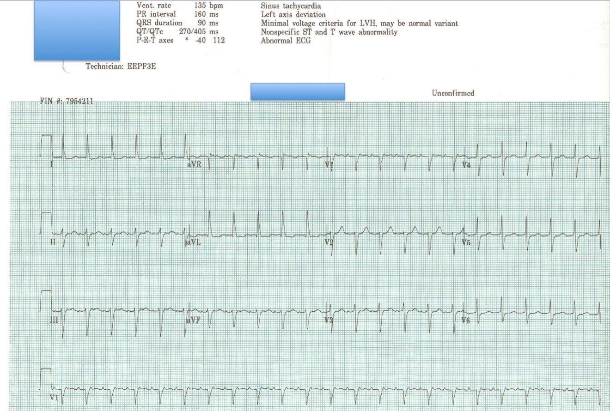
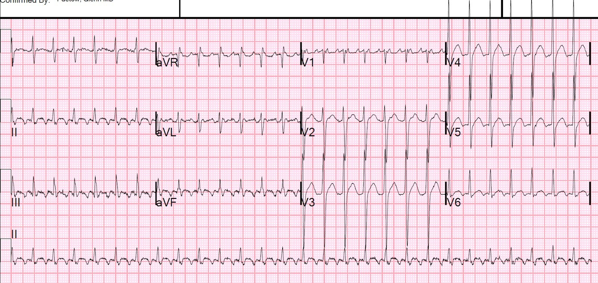
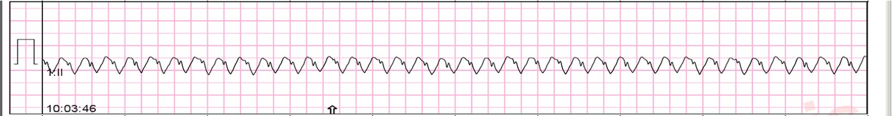
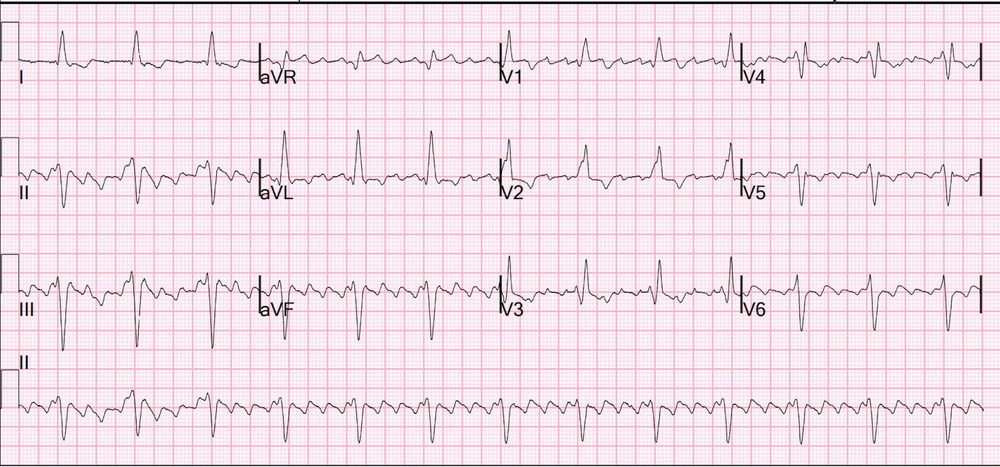
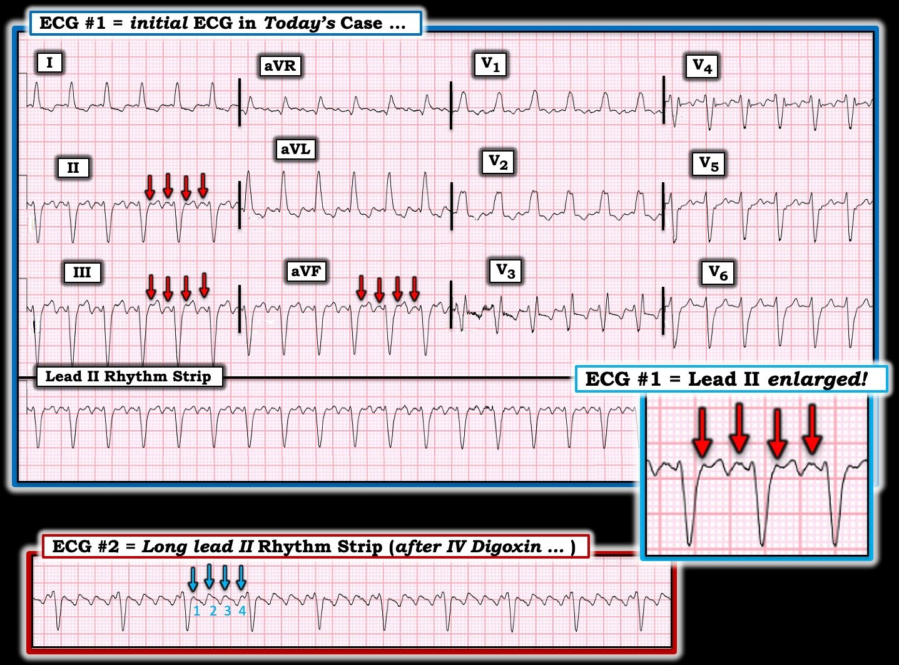

05/07/2024 — Nhịp nhanh QRS rộng đều kèm chức năng thất trái kém và tụt huyết áp. Không rõ thời gian khởi phát. Xử trí thế nào?
Bản dịch tiếng Việt của bài "Regular Wide Complex Tachycardia with poor LV function and hypotension. Duration unknown. How to manage?" – Dr. Smith’s ECG Blog. Giữ nguyên toàn bộ 7 hình ảnh của bản gốc.
Một bệnh nhân lớn tuổi, không có tiền sử bệnh lý, đến khu phân loại vì khó thở (SOB). Nhịp tim của bà rất nhanh, nên chúng tôi ghi điện tâm đồ ngay lập tức:
Điện tâm đồ:


Bạn nghĩ gì?
Có một nhịp nhanh QRS rộng đều. Hình thái QRS là RBBB kèm LAFB (sóng r rất nhỏ ở các chuyển đạo dưới, theo sau là sóng S sâu; sóng q rất nhỏ ở aVL, theo sau là sóng R lớn; trục lệch trái). Dường như có hình ảnh răng cưa ở chuyển đạo II. Có một sóng “P” dương hoàn toàn nằm khoảng giữa mỗi hai QRS ở V1.
Sóng P dương hoàn toàn là hoạt động nhĩ điển hình của cuồng nhĩ khi nhìn ở V1.
Xem các ca minh họa về sóng P dương này:




Ca bệnh tiếp diễn
Vì vậy, tôi gần như chắc chắn rằng đây là cuồng nhĩ.
Tôi đưa bệnh nhân vào khu hồi sức và nói với các bác sĩ rằng tôi nghĩ đây là cuồng nhĩ dẫn truyền AV 2:1, nhưng vẫn có một khả năng nhỏ là VT. Nếu muốn xác nhận, họ có thể cho adenosine để “làm lộ” sóng cuồng nhĩ.
Hãy nhớ: Adenosine an toàn trong nhịp nhanh QRS rộng đều. Nếu là VT, thuốc sẽ không có tác dụng. Nếu là AVNRT ngược chiều hoặc AVRT (WPW, đường phụ), nhịp sẽ chuyển. Nếu là cuồng nhĩ, thuốc sẽ làm lộ sóng cuồng nhĩ bên dưới.
[Adenosine chỉ không an toàn trong rung nhĩ kèm WPW, biểu hiện bằng tần số rất nhanh, QRS đa dạng và một số khoảng RR rất ngắn]
Siêu âm tim tại giường cho thấy chức năng thất trái kém. Huyết áp tâm thu 100.
Họ quyết định cho adenosine, và đây là điều đã xảy ra:


Adenosine để xác nhận cuồng nhĩ: sóng cuồng nhĩ lộ rõ
Thực ra không phải từ ca này. Mà là từ ca này:
Very Fast Very Wide Complex Tachycardia (Nhịp nhanh QRS rất rộng, rất nhanh)
Lý tưởng nhất là sốc điện chuyển nhịp.
Nhưng triệu chứng đã kéo dài, nên để tránh nguy cơ đột quỵ, ức chế nút AV (kiểm soát tần số) được ưu tiên hơn. Nhưng với chức năng thất trái kém, dùng thuốc chẹn kênh calci hoặc thuốc chẹn beta có thể nguy hiểm.
Chúng ta nên cho thuốc ức chế nút AV nào?
Bệnh nhân tương đối ổn định và không cần làm chậm tần số thất khẩn cấp. Vì vậy, digoxin là một lựa chọn tốt. Thuốc cần vài giờ mới có tác dụng, nhưng không làm giảm co bóp thất trái.
Còn amiodarone thì sao?
Thuốc này có lẽ cũng làm chậm tần số thất, nhưng khả năng chuyển về nhịp xoang cao hơn. Mà chúng ta vừa quyết định rằng chúng ta KHÔNG muốn chuyển về nhịp xoang cho đến khi xác định được không có huyết khối trong tiểu nhĩ! Chúng ta muốn tránh đột quỵ.
Xem nghiên cứu này, trong đó digoxin cho kết quả tốt hơn amiodarone.
Acute treatment of recent-onset atrial fibrillation and flutter with a tailored dosing regimen of intravenous amiodarone: A randomized, digoxin-controlled study (Điều trị cấp rung nhĩ và cuồng nhĩ mới khởi phát bằng phác đồ liều amiodarone tĩnh mạch điều chỉnh theo từng bệnh nhân: nghiên cứu ngẫu nhiên, đối chứng với digoxin)
Tôi khuyến nghị digoxin, và bệnh nhân được cho liều nạp digoxin.
Vài giờ sau, đây là kết quả:


NT-proBNP tăng lên 7000
Bệnh nhân cũng được cho furosemide.
Siêu âm tim chính thức sau đó cho thấy chức năng thất trái khá tốt, nên sau đó bệnh nhân được dùng carvedilol và diltiazem. Không may, hai thuốc này gây hạ huyết áp 80/40 với tần số tim 40.
Cuối cùng bệnh nhân ổn định với carvedilol 25 mg ngày hai lần và diltiazem 60 mg uống mỗi 6 giờ
Bệnh nhân không muốn làm TEE (siêu âm tim qua thực quản để loại trừ huyết khối nhĩ), nên đã bắt đầu thuốc chống đông với kế hoạch sốc điện chuyển nhịp ngoại trú sau 4 tuần
Điều gì xảy ra khi bạn cho adenosine ở bệnh nhân có nhịp này?

===================================
BÌNH LUẬN CỦA TÔI, bởi KEN GRAUER, MD (5/7/2024):
===================================
Đánh giá các nhịp WCT (nhịp nhanh QRS rộng – Wide-Complex Tachycardia) không có dấu hiệu rõ ràng của hoạt động nhĩ luôn là một thách thức. Tôi xin bổ sung những suy nghĩ sau vào phần bàn luận của BS. Smith.
- Như chúng tôi thường nhấn mạnh (Xem Bình luận của tôi trong bài ngày 5 tháng Năm năm 2020 trên Dr. Smith’s ECG Blog) — Về mặt thống kê (tức là ngay cả trước khi nhìn vào chính điện tâm đồ) — ít nhất 80% tất cả các nhịp WCT đều không có dấu hiệu rõ ràng của sóng P sẽ hóa ra là VT (nhịp nhanh thất – Ventricular Tachycardia). Điều này càng đúng ở người lớn tuổi, như bệnh nhân trong ca hôm nay. Do đó — chúng ta cần luôn luôn giả định là VT cho đến khi chứng minh được điều ngược lại.
- Dù vậy — Như BS. Smith đã nêu, có những lúc các manh mối hình thái gợi ý rằng một nhịp WCT là trên thất, hoặc kèm BBB (blốc nhánh) có sẵn từ trước — hoặc kèm dẫn truyền lệch hướng.
VÌ SAO chúng ta nghĩ điện tâm đồ hôm nay là nhịp trên thất?
Để rõ ràng, trong Hình 1 — tôi đã sao lại và đánh dấu hoạt động nhĩ trên điện tâm đồ ban đầu hôm nay, cũng như dải nhịp chuyển đạo II dài từ điện tâm đồ ghi lại (ghi sau khi nạp digoxin tĩnh mạch).
- Như BS. Smith đã nêu — điện tâm đồ ban đầu hôm nay cho thấy một nhịp WCT đều với tần số dưới 150/phút một chút, không có sóng P xoang (tức là không có sóng P dương rõ ràng ở chuyển đạo II với khả năng hợp lý để dẫn truyền).
- Hình thái QRS phù hợp với dẫn truyền kiểu RBBB/LAHB (tức là QRS dương ở V1 với sóng S tận rộng ở V6 — và ưu thế âm ở các chuyển đạo dưới). Dù vậy — việc không có sóng S tận ở các chuyển đạo chi bên I và aVL là không điển hình cho dẫn truyền RBBB thực sự. Do đó — Chúng ta không thể loại trừ VT chỉ dựa trên một điện tâm đồ duy nhất này.
ĐIỂM THEN CHỐT (PEARL) #1: Rối loạn nhịp hay bị bỏ sót nhất là cuồng nhĩ – AFlutter (Atrial Flutter). Vì khoảng tần số nhĩ của AFlutter chưa điều trị ở người lớn là ~300/phút (khoảng tần số nhĩ thường gặp từ ~250-350/phút) — nên đáp ứng thất thường gặp của AFlutter chưa điều trị là ~150/phút. Đây là kết quả của cơ chế “bảo vệ” tự động của nút AV nhằm tránh dẫn truyền AV 1:1 ở các tần số nhĩ nhanh như vậy. Thay vào đó — tỷ lệ dẫn truyền thường gặp nhất của AFlutter chưa điều trị là 2:1 (tức là 300 ÷ 2 ~150/phút).
- Cách TỐT NHẤT để không bỏ sót chẩn đoán AFlutter — là luôn luôn nghĩ tới AFlutter bất cứ khi nào bạn gặp một SVT đều (nhịp nhanh trên thất – SupraVentricular Tachycardia) với tần số gần 150/phút.
- ĐIỂM THEN CHỐT #2: Dùng compa đo (calipers) giúp nhận biết dễ hơn. Điều khiến nhịp trong điện tâm đồ #1 khó chẩn đoán đến vậy — là hoạt động nhĩ bị che khuất một phần trong QRS và sóng ST-T. Đây chính là lúc compa đo phát huy tác dụng. Chỉ cần đặt compa đúng bằng một nửa khoảng R-R. Rồi xem bạn có thể “dò bước” hoạt động nhĩ 2:1 ở bất kỳ chuyển đạo nào trong 12 chuyển đạo hay không.
- Điểm MẤU CHỐT: Các chuyển đạo “ưu tiên” của tôi khi tìm hoạt động nhĩ kín đáo là các chuyển đạo dưới (II,III,aVF) — chuyển đạo aVR — và chuyển đạo V1, vì đây là những chuyển đạo dễ để lộ “manh mối ẩn” nhất khi hoạt động nhĩ không hiện rõ.
Hãy NHÌN lại điện tâm đồ ban đầu hôm nay trong Hình 1. Các mũi tên ĐỎ tôi thêm vào ở các chuyển đạo dưới đánh dấu một “thứ gì đó thêm vào” dưới dạng một khía luôn thấy ngay sau QRS.
- Bình thường, phần đầu này của đoạn ST phải trơn láng. Hình phóng đại chuyển đạo II trong Hình 1 giúp dễ nhận ra tính đều đặn 2:1 hoàn hảo của các sóng dương biên độ nhỏ này, xuất hiện với tần số ~300/phút. Thứ duy nhất tạo ra điều này là AFlutter!
- Xin nhấn mạnh: Hoạt động nhĩ 2:1 mà tôi đánh dấu trong Hình 1 rất kín đáo. Bạn sẽ không thấy nó trừ khi chủ động tìm. Và lý do tôi ngay lập tức tìm trong 5 chuyển đạo “ưu tiên” của mình các dấu hiệu kín đáo của hoạt động nhĩ thêm vào là: i) Hình thái QRS trong điện tâm đồ #1 phù hợp với dẫn truyền kiểu RBBB/LAHB, do đó có thể phù hợp với căn nguyên trên thất; và, ii) Tần số của nhịp nhanh đều hôm nay gần 150/phút (tức là Do đó theo ĐIỂM THEN CHỐT #1, cần nghĩ tới AFlutter là căn nguyên có thể).


Tỷ lệ dẫn truyền AV sau digoxin là bao nhiêu?
Tôi trình bày dải nhịp chuyển đạo II dài từ điện tâm đồ thứ 2 của ca hôm nay ở phần dưới Hình 1. Hoạt động cuồng nhĩ đều giờ đã hiện rõ (các mũi tên XANH trong Hình 1). Người ta dễ đếm nhầm tỷ lệ hoạt động nhĩ thành dẫn truyền 3:1 — nhưng các con số XANH cho thấy đây là dẫn truyền AV 4:1.
- ĐIỂM THEN CHỐT #3: Tỷ lệ dẫn truyền lẻ trong AFlutter không thường gặp (nếu không muốn nói là hiếm!). Như đã nhấn mạnh ở trên — tỷ lệ dẫn truyền thường gặp nhất, vượt xa các tỷ lệ khác, của AFlutter chưa điều trị là 2:1, thường cho tần số thất ~150/phút (khoảng thường gặp ~140-160/phút).
- Tỷ lệ dẫn truyền thường gặp kế tiếp của AFlutter là 4:1 — chính là điều chúng ta thấy trong Hình 1.
- Tỷ lệ dẫn truyền 1:1 và 3:1 ít gặp hơn nhiều. Ý nghĩa lâm sàng của việc nắm các tỷ lệ dẫn truyền này — là một nhịp nhanh đều ~110/phút ít có khả năng là AFlutter chưa điều trị hơn nhiều — vì 110 X 2 = 220/phút, chậm hơn đáng kể so với đáp ứng tần số thất thường gặp của AFlutter chưa điều trị (tức là Tần số nhĩ của cuồng nhĩ có thể thấp hơn nếu bệnh nhân đang được điều trị bằng thuốc chống loạn nhịp).
- Dẫn truyền AV 1:1 trong AFlutter là hiếm. Hầu như những lần duy nhất tôi gặp tình huống này là với WPW (tức là dẫn truyền gia tốc qua đường phụ) — hoặc, ở bệnh nhân AFlutter được điều trị bằng thuốc chống loạn nhịp như flecainide, nhưng không kèm thuốc ức chế nút AV để kiểm soát đáp ứng thất.
Như BS. Smith đã giải thích — lựa chọn digoxin tĩnh mạch là phù hợp và hiệu quả trong ca hôm nay.
- Được đào tạo vào những năm 1970 — tôi đã có rất nhiều kinh nghiệm dùng Digoxin đường uống và tĩnh mạch. Vào thời đó, dường như hầu như mọi bệnh nhân tim mạch bị AFib mạn tính hoặc suy tim đều dùng thuốc này. Thuốc có hiệu quả — nhưng cần thận trọng khi dùng vì nguy cơ ngộ độc digitalis.
- Trong những thập kỷ gần đây — Digoxin được dùng ít hơn nhiều. Do đó — các thế hệ bác sĩ hiện nay có ít kinh nghiệm dùng thuốc này hơn hẳn. Tôi tin rằng ( = Ý kiến của tôi) việc giảm dùng Digoxin này là hợp lý vì 2 lý do: i) Trong đa số trường hợp — đã có những thuốc khác hiệu quả hơn; và, ii) Chính vì các thế hệ bác sĩ gần đây ít kinh nghiệm dùng Digoxin hơn — nên nguy cơ xảy ra ngộ độc digitalis trong tay họ tăng lên. Thuốc có hiệu quả — nhưng việc dùng tối ưu đòi hỏi một “nghệ thuật”.
- Dù đã nói như trên — việc BS. Smith khéo léo dùng liều nạp Digoxin tĩnh mạch trong ca hôm nay minh họa cho việc dùng thành công trong tình huống đặc biệt này.
- ĐIỂM THEN CHỐT (PEARL) #4: Trong khi thời gian khởi phát tác dụng sau khi uống Digoxin là từ 30 phút đến 2 giờ — thời gian khởi phát tác dụng sau khi tiêm tĩnh mạch có thể bắt đầu trong vòng 15 đến 30 phút (Ferrari và cs. — Current Cardiol Rev, 16(2): 141-146, 2020 — và — London Health Sciences Centre, 2018). Digoxin tĩnh mạch có thể bắt đầu làm chậm đáp ứng thất của AFib hoặc AFlutter sớm hơn nhiều bác sĩ lâm sàng vẫn nghĩ.